Stormbreaker (2025, ongoing)
Stormbreaker is my most ambitious level design project to date: a fully custom-themed Team Fortress 2 level with a complex, vertical layout set aboard a luxury airship high above the Swiss Alps. Like most of my TF2 work, it was developed in collaboration with members of the TF2Maps.net community.
I oversaw or directly handled the original layout and iteration, art direction, asset creation, lighting, optimization, and promotion of the final level. Collaborators contributed custom models, textures, scripting, and invaluable design input along the way.
This retrospective outlines the project's original idea, design choices, layout iterations, thematic considerations, and team collaboration that resulted in a fully realized Team Fortress 2 level with a strongly original theme.
Idea
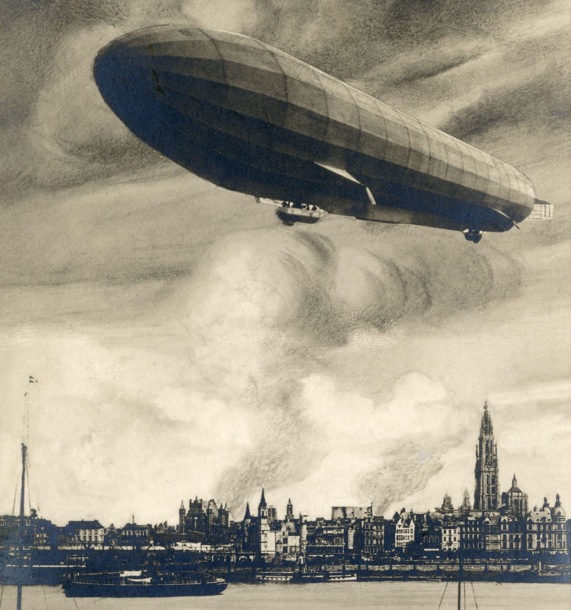
Stormbreaker was planned from the top down. The target game mode was Control Points, specifically the 3CP variant, in which three control points are arranged in a linear row across the layout and both teams begin the round owning one. This format is less popular among custom map creators than the larger 5CP variant, and for good reason: 3CP layouts tend to either stalemate or steamroll, leading to very short or very long rounds. Team imbalance tends to get amplified.
Designing around this tendency was the first constraint. Compared to Valve's 3CP level Powerhouse, which introduced the format, Stormbreaker is significantly smaller and spatially restricted, with streamlined routes and fewer open areas within which team pushes die. At the same time, objectives are accessible from several directions at once, including from above and below, which TF2's high class mobility and ambush playstyles benefit from greatly.
The theme emerged alongside those constraints. An airship felt daring, but compatible: any level set within a vehicle has natural bounds, which justifies the small footprint architecturally. It also fit TF2's retrofuturistic and sometimes fantastical spytech aesthetic while introducing something completely new to the game world.

The original concept leaned heavily into Steampunk and Art Déco directions. This concept was set aside due to the unrealistic amount of custom assets and development time such a style would have required. Some Art Déco elements are still left in the final project, but the Steampunk were replaced with design elements found on real-life ocean liners from the early to mid twentieth century. These structures often needed to fulfill the compromise between opulence and functionalism, which is very compatible with TF2's typically very industrial but stylized themes. Inspiration was also found in the only real luxury airship ever constructed: the Hindenburg, which was largely outfitted in a minimalist Bauhaus style due to weight concerns.
Layout & Iteration

Any level set inside a vehicle faces an immediate spatial problem. The vehicle is finite, and there are only so many modifications to its size you can make before the silhouette is ruined. Most of the playable level is set within an unrealistically enlarged cabin below the zeppelin's hull (the silver "balloon"), but it works in the exaggerated TF2 universe, and the shape is still very clearly recognizable as an airship.
The layout was iterated center-outward. The cargo hold, housing the central control point and connected to the decks above, was built and tested first as a standalone Arena map, establishing the core fight geometry and sightline logic. Once that space played well in isolation, surrounding areas like the "midship" and connecting corridors were added and the map was tested as King of the Hill. When these areas were validated by testing, I built the final control point and team spawn areas, completing the 3CP layout. This approach allowed stress-testing of each area before it became load-bearing for the surrounding geometry. Around 20 different versions of Stormbreaker were tested before I was comfortable with the layout.
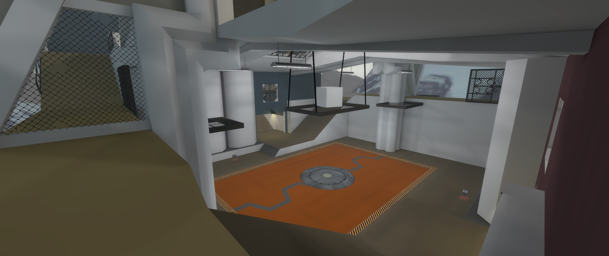
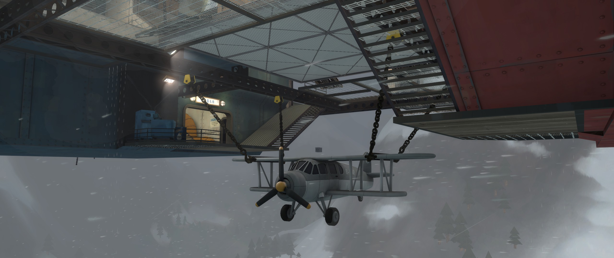
The middle point underwent around five distinct iterations before reaching the final configuration: the control point on the middle level, with geometry both above and below it. The plane hanging below the point, usable as a sneaky path to the enemy base, was a relatively late idea that proved very popular. The original idea to have the control point on the top deck was less well-received, with Snipers dominating any fight due to the long sightline advantage.
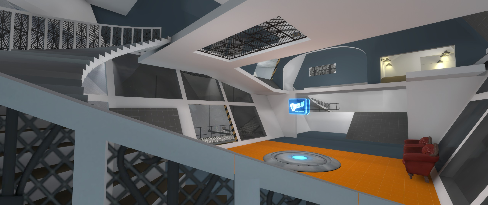
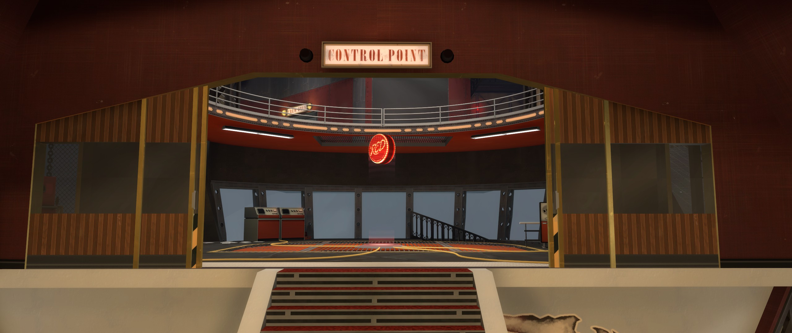
The final control points required even more revision. Control point placement and the housing structure underwent radical remakes for weeks, with the spiral staircase below it appearing and reappearing several times to test balancing. Balancing the middle control point is comparatively easy, since the two teams face the exact same layout advantages and disadvantages. The final points are meant to be the defending team's home base: if they fall too easily, rounds end very quickly; if they are too strong, rounds can take forever. This fine-tuning required about 10–15 playtests of 30–60 minutes each to figure out.
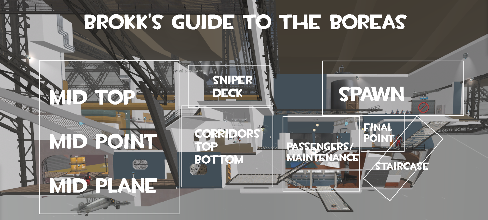
One consequence of the level's vertical "sandwich" layout of several decks above each other, combined with the fairly narrow width, was that mobility classes (Soldier, Demoman, Scout) can bypass segments of the level by jumping along the exterior, effectively using the airship's surrounding empty air as a flank route. Balancing this took careful consideration. An early solution was cut: wind would push airborne players away from the hull or within a set direction, but this punished players in a way that felt both unintuitive and unfun. The lesson here is that an immediate band-aid to a balancing issue will rarely work as well as sitting down and reworking the geometry, which proved more fruitful.
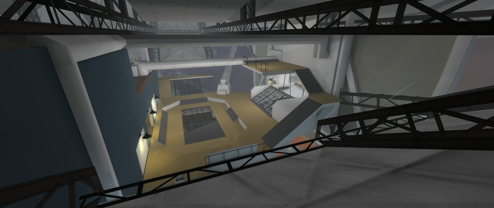
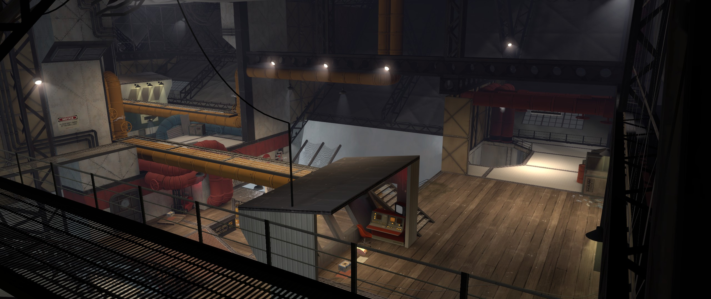
Artpass
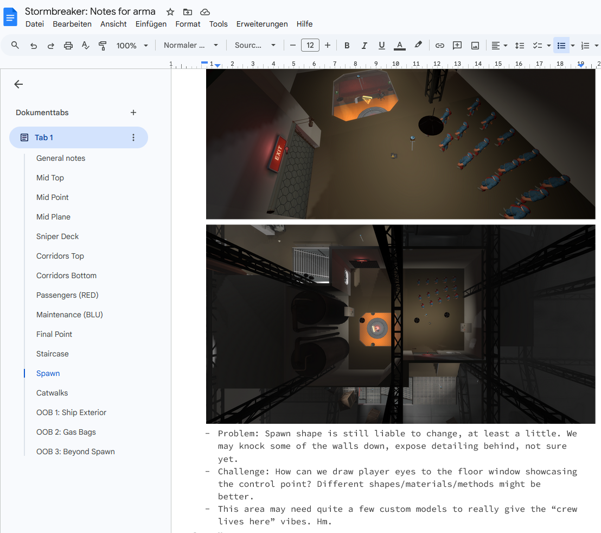
As usual, I started the artpass process by gathering large amounts of inspirational material. Inspiration included real-life pictures of Titanic furniture and fixtures, historical construction plans of ships and airships, scaffolding and industrial architecture, and general 1930s and 1940s decorative architectural elements. A special mention also goes to the depiction of vehicles in Dishonored 2 and The Order: 1886 for their high level of detail and stylization. I also did a lot of reading on the real-life history of airships — including the US Navy's attempts at using them as flying aircraft carriers (this was a real thing!) — and their role in culture both at the time and today. The 1975 film Hindenburg has very detailed recreations of the real zeppelin's Bauhaus interiors, which were instructive in understanding the spatial limitations of the real thing. Some artistic liberty had to be employed to accommodate TF2's fast-paced gameplay, but the identity is still there.
Eventually, we settled on four sub-themes that would define the MLZ1 Boreas (the zeppelin's in-universe designation) as a coherent space. Two would be shared across both teams; two would be unique to each side:
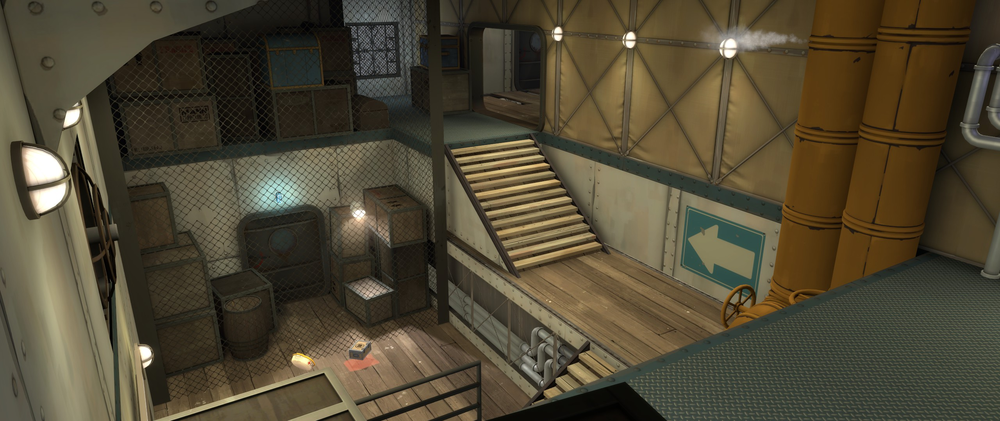
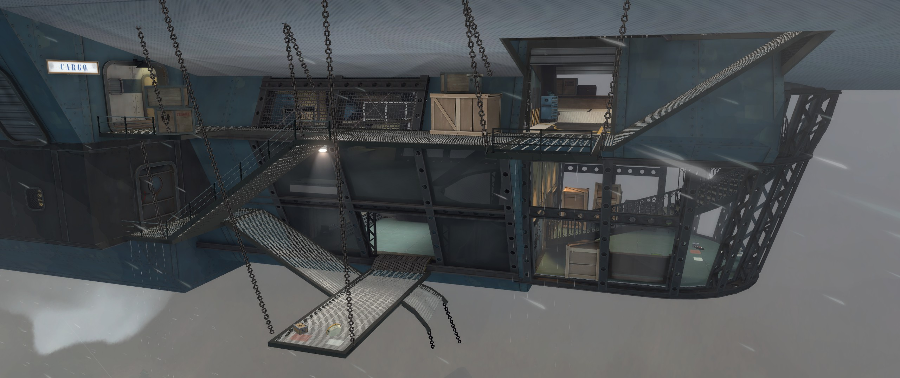
The foundation is Cargo: the language of the ship's corridors, walkways, mid-deck, and hold. Utilitarian structures, custom luggage props inspired by 1930s steamer trunks, canvas walls, pipes and girders in dark browns and yellows. It was deliberately designed to feel less strongly associated with either team, with only team-colored lighting, signage, and accents to orient players. This style was established first, since everything else on the ship derives its identity from it.
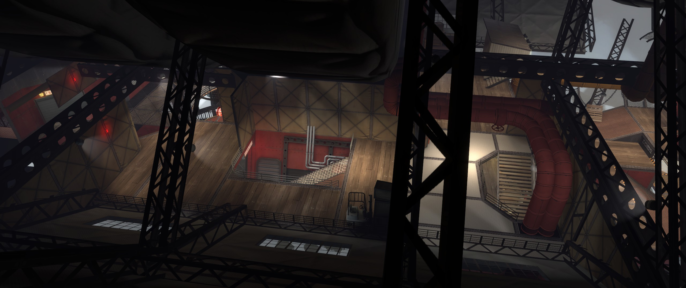
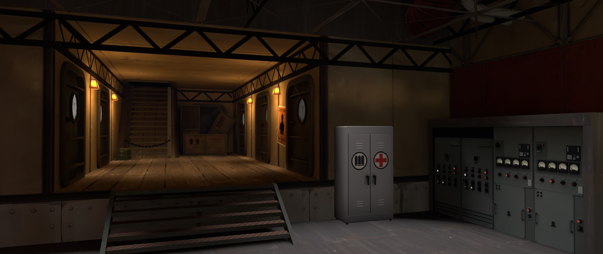
Above gameplay space and near the team spawns, the Hull theme takes over: dominated by the zeppelin's gas-filled balloons, visible from the team spawns and the areas high above bounds. The defining visual element is the lifting gas sacks, which in real life were made from Goldbeater's Skin — a material produced from rubberized cow intestines. We spent some time researching how to emulate this material and its shape in the Source Engine. The gas sacks are fairly simplistic props with a very high-res and aggressive baked bumpmap to emulate the real material's ridges and creases. The structure also had to be scaled down considerably to accommodate jumping class gameplay. Team-colored metal walls and lighting anchor each side's spawn area.
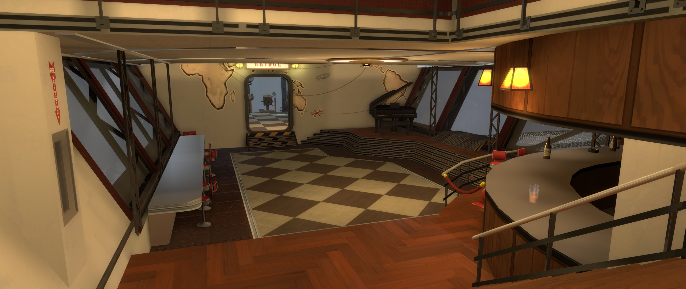
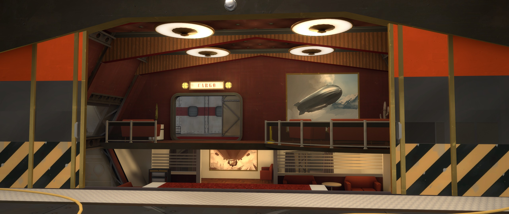
The two team-specific themes diverge sharply. Red Team's control point courtyard draws from the Passenger areas of the great ocean liners and the Hindenburg's own lounges: warm, organic colors, soft furnishings, and a high density of decorative detail. Ashtrays with still-lit cigars, a passenger bar and kitchen, a control cabin with instruments and a course heading. I encouraged our concept artist to produce several original artworks displayed throughout the space, which emphasized the sense of history and cultivation.
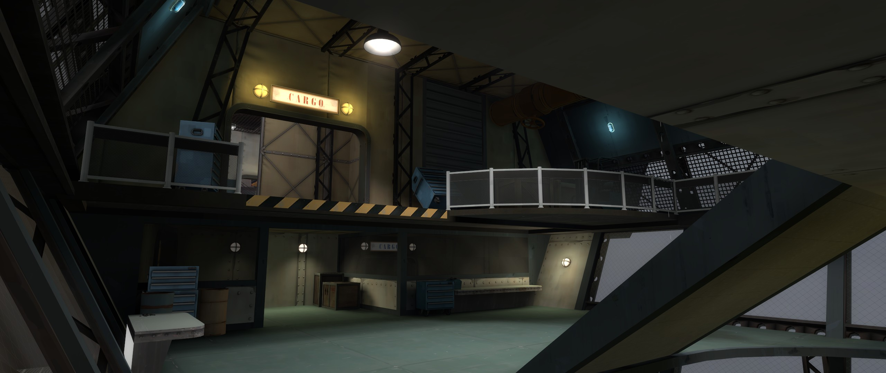
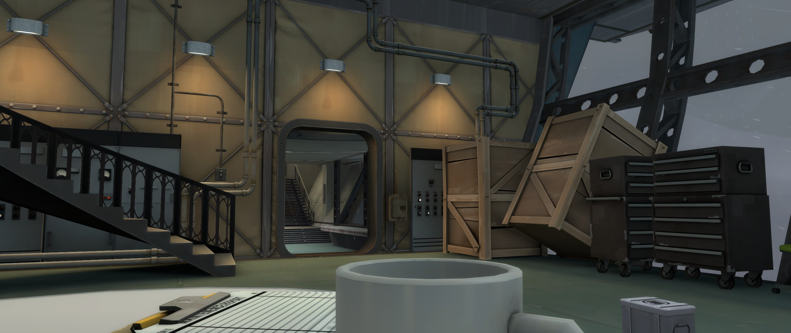
Blue Team's side answers with the Workshop: cold, artificial, and utilitarian. Inspired by airplane repair facilities and the US Navy's real-life flying aircraft carriers USS Macon and USS Akron, it is defined by cargo and repair elements that highlight the space's cramped industrial character. A half-assembled airplane was considered but cut — the repair tool aesthetic served the space better and felt more believable within the airship's footprint.

The biplane prop was something of a team effort. It can be found hanging below the central control point as a walkway, and also circling the zeppelin in several animated versions. FGD5 made the prop. I then blocked out a pathway and timing plan and made an in-editor prototype animation, which Maxxy then refined into a baked animation. Finally, MCL15 wrote code to allow the game's spectator camera - which players use while waiting to respawn - to follow the plane around the ship as an action cam. This proved to be an incredibly popular feature with players, many of whom had never seen anything like it in another project.
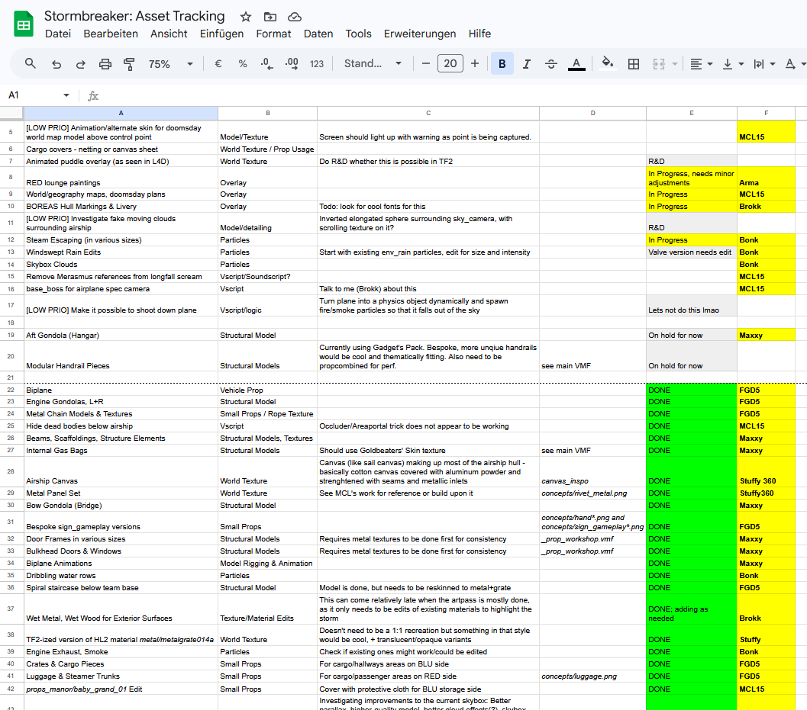
Custom assets for this project were provided by several collaborators. It was the first time I worked with a concept artist, and the team's size was larger than any I had directed before. This required a more structured approach to exchanging feedback and ideas, and I had to learn how to express myself efficiently and clearly to a multi-cultural team spanning from South America to Eastern Europe.
Optimization
Optimization for Stormbreaker was significantly more involved than any previous project. The Source Engine's BSP visibility system is built around the core assumption that the world is enclosed — effectively shrink-wrapped — in geometry. Any space, even open spaces, is a series of rooms ideally connected via narrow doorways. An airship level completely shatters this principle, since there is sky in every direction, which causes Source's VIS system to assume that everything is visible from everywhere.
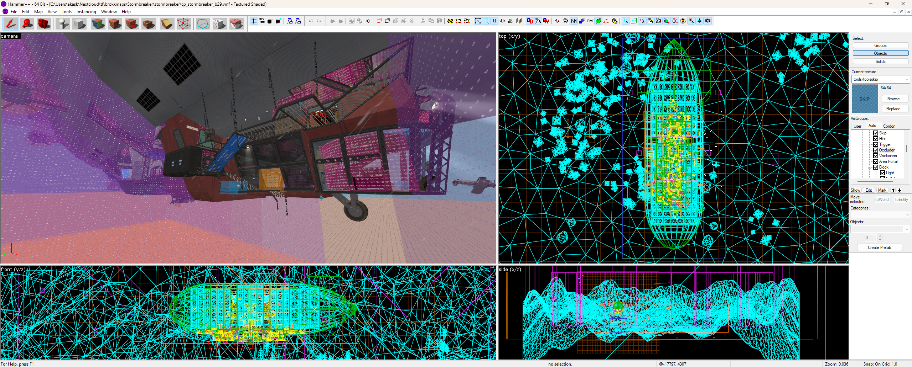
As a result, performance was abysmal before a very tedious manual optimization process: hint brushes to force the VIS compiler to divide visleaves into useful boundaries, areaportals and areaportalwindows to manually cut off sections of the map from each other, occluder brushes to hide props. Prop fade distances were set more aggressively, especially on decorative geometry. The result is acceptable, but Stormbreaker does push the Source Engine to several limits. I deepened my understanding of BSP visibility optimization considerably, though it took more time than anticipated. I have since resorted to other engines for projects involving open worlds and open skies.
Release & Promotion
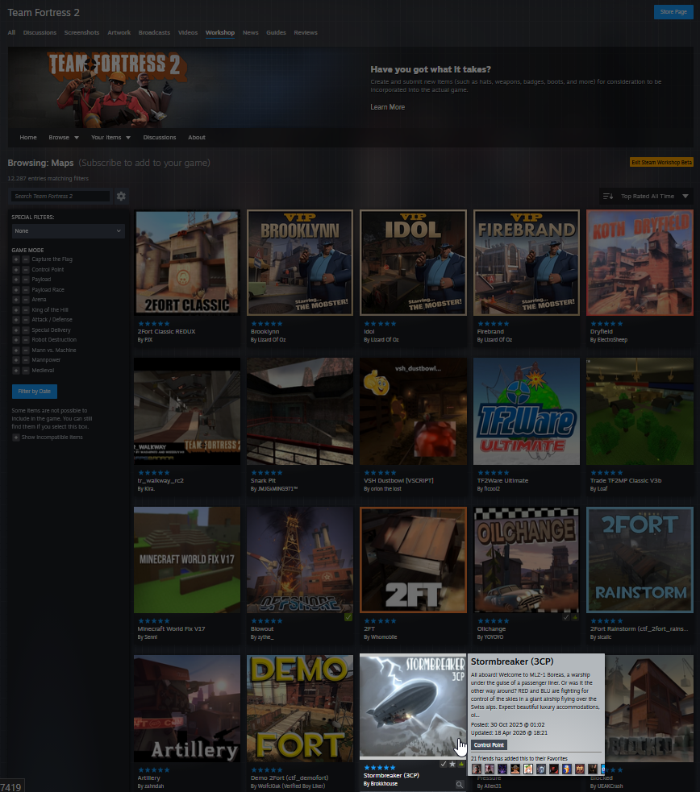
At the time of writing this retrospective (April 2026), Stormbreaker sits at #18 out of 12,285 maps on the Steam Workshop and is regularly played by custom TF2 map communities. The level was published in time for the Winter 2025 TF2 update but was not selected for inclusion. Development has continued since, with a new trailer and further updates planned ahead of the Summer 2026 update.
Stormbreaker was subsequently selected for the annual Seasonalander community event alongside two other maps. This one-day charity event by the TF2 competitive player community features competitive players and streamers facing off on unique or interesting maps, usually to benefit a gaming-adjacent charity. For my project, this brought a very different kind of exposure, and perhaps more valuably, a different kind of player feedback: competitive players tested the map regularly over approximately six weeks, providing more structural and performance-focused feedback than public playtesting. They identified several minor improvements to chokepoints, player pathing, sightline exploitation, and in-game performance. The lesson here is that focus group feedback, if available, is a great way to improve a project even further.
The map was played live on Twitch during the Seasonalander 2026 event on February 7th–8th, which raised $2,336.66 for the Child's Play game industry charity.
A VOD showing Stormbreaker being played and narrated live can be found here.
Conclusion
Stormbreaker was, at the time of its creation, the most demanding art project I had ever attempted. I think the projects that teach me the most and push my growth as an artist are the ones that just barely exceed my current abilities without overwhelming me entirely. You're treading water, but you're not drowning.
The level itself was a deliberate challenge: a layout that fought the engine, a largely custom theme within TF2, and a game mode variant with little precedent or design strategies surrounding it. The team was another: six collaborators spanning half the globe, each working off my direction while I was also building the thing they would contribute to. Managing a team at this scale required me to communicate clearly and quickly across cultures and time zones, to translate vague aesthetic intentions into something actionable, and to make decisions with whatever information was available to keep the ball rolling. There was some friction, of course, but all of us are extremely proud of what we have achieved, and we all had fun making it.
What I carry from Stormbreaker into future projects has technical aspects, but also social ones. Iterate center-outward. Stress-test areas in isolation. Push but don't break engine constraints, especially if it's not your engine. And outside the editor: communicate clearly, communicate often, and find collaborators whose company makes the work itself enjoyable.
Stormbreaker was made in collaboration with:
- Models, Textures, DetailingGabriel "MCL15" Macken
- Models, TexturesSzabó "Maxxy" Attila
- ModelsAlex "FGD5" Stewart
- TexturesStuffy360
- ParticlesBrandon "Bonk Nickeltoon" Koller
- Concept Art, TexturesArma
Team Fortress 2 is a registered trademark of Valve Corporation.